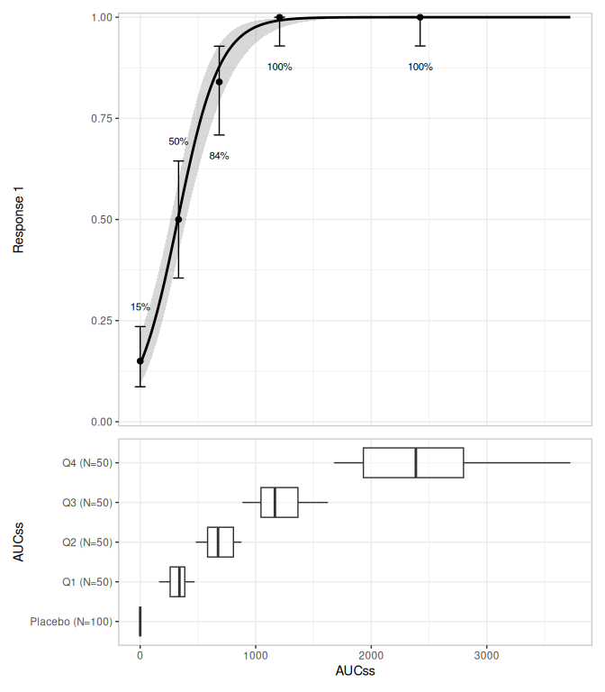
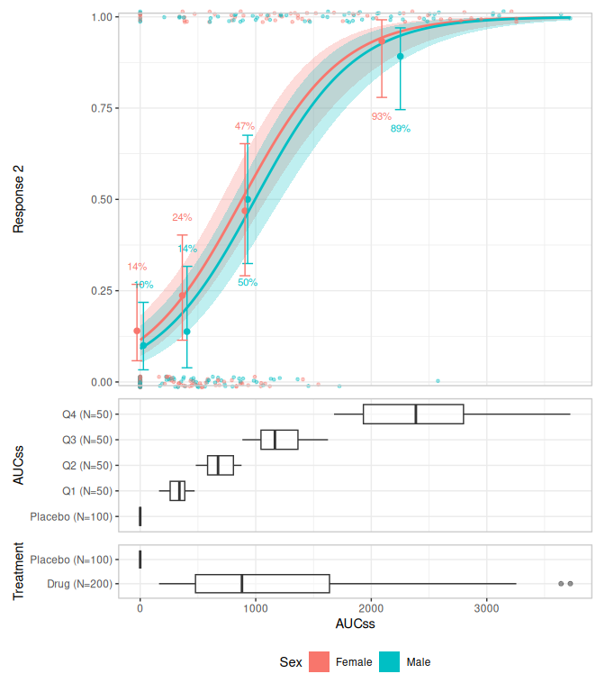

The erplots package provides a mini-language for building exposure-response plots: model curves/ribbons, quantile-binned response-rate summaries, data strips, and grouped distribution panels. It is model-agnostic: erplots never fits a model itself. Instead, you fit a model with whatever package suits your workflow (e.g. erglm for logistic regression), and pass the fitted object to er_plot_add_model().
Installation
You can install the development version of erplots like so:
pak::pak("djnavarro/erplots")Example
library(erplots)
library(erglm)
mod <- erglm_model(ae1 ~ aucss, erglm_data, family = binomial())
erglm_data |>
er_plot(aucss, ae1) |>
er_plot_add_model(mod) |>
er_plot_add_quantiles() |>
er_plot_add_groups(aucss) |>
plot()
mod2 <- erglm_model(ae2 ~ aucss + sex, erglm_data, family = binomial())
plt <- erglm_data |>
er_plot(aucss, ae2, stratify_by = sex) |>
er_plot_add_model(mod2) |>
er_plot_add_quantiles(bins = 3) |>
er_plot_add_data() |>
er_plot_add_groups(group_by = c(aucss, treatment), keep_strata = FALSE)
print(plt)
#> <er_plot>
#> plot variables:
#> - exposure: aucss
#> - response: ae2
#> - stratification: sex
#> plot layers:
#> - model: erglm_model/glm/lm
#> - quantile: 3 bins
#> - overlay: stratified
#> - group: .aucss_quantile, treatment
#> plots built: <none>
#> output built: no
plot(plt)